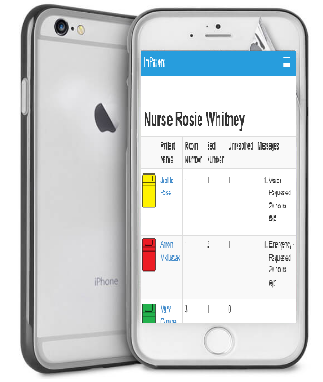
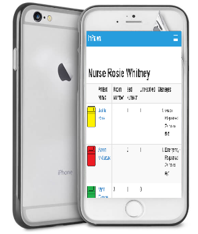
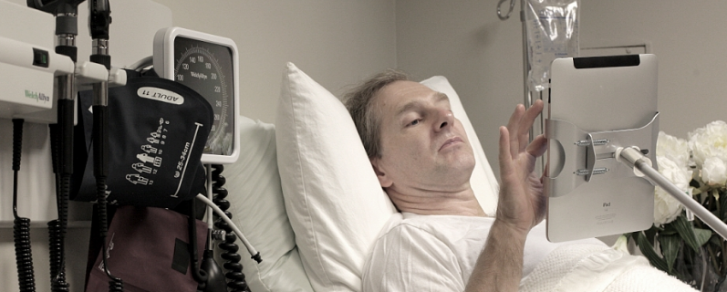
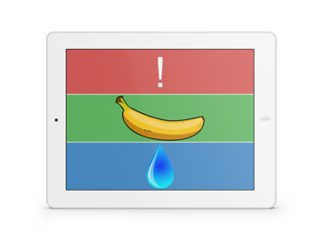

Designed with mobile in mind
Patient messages are automatically updated on the nurse's device. Compatible with all mobile devices and laptops.
Allows nurses to respond to patient needs and nurse-nurse messages on the go.

Fully customizable to suit your clinic's needs.
Creates a user friendly experience for all types of users.
Quick startup time allows Caregivers to access important notification in seconds.
Patient messages are automatically updated on the nurse's device. Compatible with all mobile devices and laptops.
Allows nurses to respond to patient needs and nurse-nurse messages on the go.

The patient user interface is totally unique, simplified to create the most user-friendly experience.
